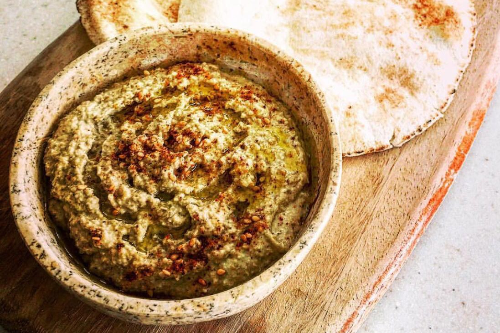

Vegan Diet
Our vegan recipes are full of flavor and nutrition, using only plant-based ingredients. From main dishes to desserts, our vegan recipes will show you that you can enjoy delicious meals without animal products.
Vegetarian Diet
Our selection of vegetarian recipes includes dishes that are meat-free but may include dairy and eggs. These recipes are designed to provide you with the nutrition you need while respecting your choice not to consume meat.

Gluten Free Diet
For those with gluten sensitivity or celiac disease, we offer a variety of gluten-free recipes. These recipes use gluten-free ingredients or substitutes so you can enjoy delicious meals without worrying about gluten.
VEGAN RECIPE: SEITAN CASSEROLE WITH MUSHROOMS
4 persons | 90 minutes
INGREDIENTS
- 8 small seitan fillets
- 15 units of shiitakes
- 15 pieces of portobello mushrooms
- 2 units of chanterelles
- Half an onion, half a zucchini, oregano, thyme
- 1 clove of garlic
- Dried garlic powder, olive oil and salt.
HOW TO MAKE SEITAN CASSEROLE WITH MUSHROOMS
1- Chop the onion into very fine cubes along with the zucchini and make a small sauté over low heat to poach.
2- Once the onion and zucchini are poached, add the chopped mushrooms to the sauce and keep them over low heat for about three minutes.
3- Without turning off the heat, add a liter and a half of water together with salt, oregano, thyme and dried garlic. Let it simmer until 50% of the water is reduced.
4- On the other hand, in a frying pan with a little garlic, lightly fry the seitan fillets until the surface is lightly browned.
5- Add the seitan fillets to the mushroom stew and leave it all together over low heat for ten minutes, so that some sauce remains in the pan at the end of cooking.
Suggestion
- If you do not want to abuse the common wheat, remember that there is also spelt seitan, a more digestive and nutritious variety.
VEGETARIAN RECIPE: GREEN BEAN AND RICE SALAD
4 persons | 35 minutes

INGREDIENTS
- 300 grams of round green beans
- 100 grams of basmati rice
- 75 grams cooked corn
- 3 carrots
- 25 grams of old-fashioned mustard
- 1 tablespoon of honey
- 50 milliliters of olive oil; Salt
HOW TO MAKE GREEN BEAN AND RICE SALAD
1- Wash and chop the beans, and cook them in salted water for 15 minutes. Drain and let them cool.
2- Cook the rice in twice the volume of water for 12 minutes, drain and let it cool.
3- Rinse and drain the corn. Peel and dice the carrot. Put the honey in a bowl, add the mustard, a pinch of salt and stir with a whisk. Add the oil in a trickle, stirring constantly.
4- Mix the beans with the corn and carrots and dress with the sauce.
5- Serve the salad in individual bowls with portions of white rice in flan molds.
Suggestion
- You can use different types of green beans to add variety to your salad. Yellow green beans or wax beans can be a good choice.
GLUTEN FREE RECIPE: LENTIL AND ORANGE HUMMUS
3 persons | 40 minutes
INGREDIENTS
- 1 cup (175 g) Du Puy green lentils, 1 bay leaf, 1 teaspoon cumin
- 1 small piece of kombu seaweed (optional), 1 clove of garlic
- 2 tablespoons tahini, 2 tablespoons lemon juice
- 4 tablespoons of olive oil, 4 tablespoons of orange juice
- 1/2 teaspoon grated orange peel, 1/2 teaspoon ground coriander
- 2 tablespoons fresh parsley, black pepper and salt
HOW TO MAKE LENTIL AND ORANGE HUMMUS
1- In a pot, put the lentils with 1 liter of water, the bay leaf and the kombu seaweed and cook until the lentils are cooked, about 25-30 minutes. Drain well.
2- Prepare the hummus. Grate the peel of an orange. Squeeze the juice from the orange and half a lemon. Peel the garlic.
3- Mash the lentils with the tahini, salt, 4 tablespoons of orange juice, a teaspoon of the zest, lemon juice, cumin and coriander, olive oil and garlic. If necessary, add a little water. Taste for flavor and adjust salt and lime.
4- Serve in a bowl drizzled with olive oil and a little black pepper, parsley and orange zest.
Suggestion
- Consider soaking lentils overnight before cooking. This can help reduce cooking time and make them more digestible.